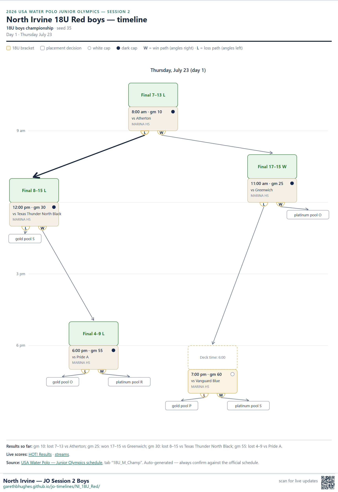
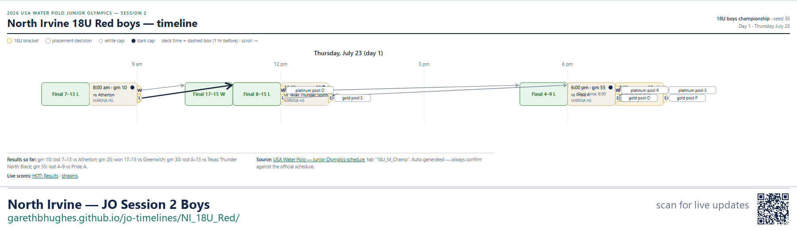

2026 USA Water Polo Junior Olympics — Session 2
18U boys championship · seed 35
Last verified against the master schedule at Thursday July 23, 7:30 PM


Results so far: gm 10: lost 7–13 vs Atherton; gm 25: won 17–15 vs Greenwich; gm 30: lost 8–15 vs Texas Thunder North Black; gm 55: lost 4–9 vs Pride A.
Live scores: HOT! Results · streams.
Source: USA Water Polo — Junior Olympics schedule, tab “18U_M_Champ”. Auto-generated — always confirm against the official schedule.